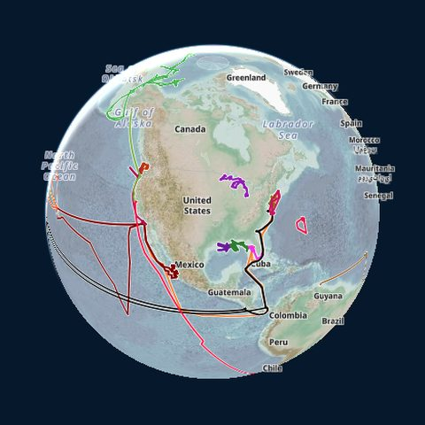

Which research ships were there, and what data did they collect?
An open, global registry of research platforms: who owns and operates them, where they've sailed, and where to find their cruise data. Free to use, no login, built on FAIR principles.
Draw an area on the map Browse vessels
The interactive globe cannot be shown in this browser.
Start with what you need
Find tracks, cruises, and data
Draw a box on the map, pick years, and see which ships were there, their cruises, and links to their data.
Open the mapSee your fleet
A dashboard by owner or funding agency: fleet status, age, cruise activity by agency, and data completeness.
Fleet dashboardsUpdate once, use everywhere
One place to keep your ship's specs and schedule current. Get it back as an API, a JSON feed, and widgets for your own site.
Operator toolsMeet the fleet
Explore the world's research ships by country, size, and mission, and follow where science happens at sea.
Browse vesselsUpcoming events
All events and resourcesWhat's in the registry today
Counts are computed live from the prototype's data files: the 2026 master vessel list (merged from GMSO, VesselConnect, and the legacy researchvessels.org database), the legacy cruise schedule database (1990-2015), and historical Sailwx.info positions (2008-2014).
How it fits together
Registry
Vessels, owners, operators, homeports, and flag state, each with dates and a source, so history isn't overwritten.
Cruises & tracks
Cruises and legs linked to track points and precomputed track lines, with the position precision labeled.
Data discovery
Links from each cruise to its datasets at NCEI, R2R, BCO-DMO, and ERDDAP, using DOIs where they exist.